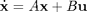
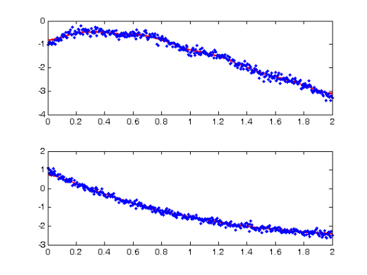
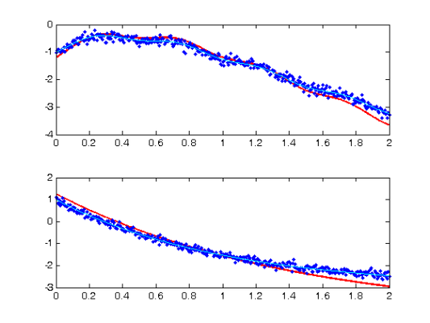
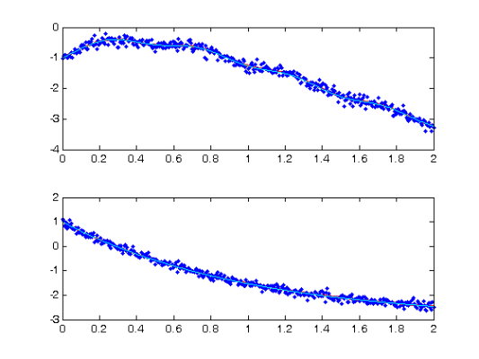
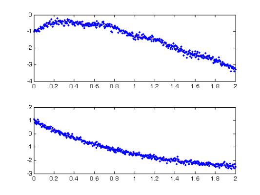

Contents
- Profile Estimation Experiments - General Forced Linear Systems
- RHS Functions
- Various parameters
- Forcing components
- Observation times
- Calculate trajectories
- Set up observations
- Fitting parameters
- Profiling optimisation control
- Setting up functional data objects
- Smooth the data
- Re-smoothing with model-based penalty
- Perform the Profiled Estimation
- Plot Smooth with Profile-Estimated Parameters
- Comparison with Smooth Using True Parameters
- Squared Error Performance
- Calculate Sample Information and Variance-Covariance Matrices
Profile Estimation Experiments - General Forced Linear Systems
This page details the use of the 'genlin' functions with the profiling code to estimate parameters in a general class of forced linear differential equations. The file largely follows the structure of FhnEx.html and the reader is referred there and to the Profile Users Manual for commentary not specifically associated with forced linear systems.
These functions are set up to deal with equations of the form

where u is a known vector of forcing functions and the parameters occur as entries in A and B.
Note that the dimensions of x and u are detected automatically.
% The function to input into the ODE solver is odefn = @genlinfunode; % Function for ODE solver (exact)
RHS Functions
We define the genlin library specifically here:
fn.fn = @genlinfun; % RHS function fn.dfdx = @genlindfdx; % Derivative wrt inputs (Jacobian) fn.dfdp = @genlindfdp; % Derviative wrt parameters fn.d2fdx2 = @genlind2fdx2; % Hessian wrt inputs fn.d2fdxdp = @genlind2fdxdp; % Hessian wrt inputs and parameters fn.d2fdp2 = @genlind2fdp2; % Hessian wrt parameters. fn.d3fdx3 = @genlind3fdx3; % Third derivative wrt inputs. fn.d3fdx2dp = @genlind3fdx2dp; % Third derivative wrt intputs, inputs and pars. fn.d3fdxdp2 = @genlind3fdxdp2; % Third derivative wrt inputs, pars and pars. % dimensions = time, component, input, % parameters
Various parameters
The main input into genlin that needs to be tailored is a component labelled more. This controls which elements of which matrices will be estimated. If left empty, it assumes that there is no forcing component u and the all the elements of A must be estimated.
Where it is not the case that all elements of A must be estimated, more is a struct with the following entries:
- mat: a default matrix for A, taken to be all zero by default, but may be specified differently.
- sub: a set of indices indicating the entries of A to be estimated. This is given as an m-by-2 vector and the first m entries of the parameter vector is assumed to correspond to it. If this is not given it is assumed that all elements of A must be estimated. Note that these functions do not allow the same parameter to appear in different places in A.
% In the following, we have a 2-by-2 system in which A(2,1) is specified as % zero and is not estimated: more = []; more.mat = zeros(2,2); more.sub = [1 1; 1 2; 2 2]; % Specify that A(2,1) is zero and % not being estimated. % The rest of the parameters can be specified as normal. y0 = [-1,1]; % Initial conditions pars = [-1; 2; -1; 1; -1]; % Parameters (final two used for forcing disp(['Parameter values: ',num2str(pars')]); % functions). sigma = 0.1; % Noise Level jitter = 0.2; % Perturbation for starting startpars = pars + jitter*randn(length(pars),1); % of parameter estimates disp('Initial parameter values: ') disp(num2str(startpars')); % functions).
Parameter values: -1 2 -1 1 -1 Initial parameter values: -1.0692 2.1063 -0.70081 1.2718 -1.0128
Forcing components
If the system is forced, then a number of other components of more must be specified:
- force: cell array of forces. These may be either functions (which accept a sequence of evaluation times, plus one free argument) or functional data objects with will be evaluated at the evaluation times.
- force_mat: a default matrix for B, if not specified it is assumed to be all zero. This must have dimensions (size of x)-by-(size of u).
- force_sub: a k-by-2 set of indices mapping the (m+1)|st to |(m+k)|th elements of the parameter vector into |B. If left empty, this is assumed to be all the elements of B. Note that these functions do not allow parameters to appear more than once in B or in both A and B.
If more.force is not specified, then the system is assumed to be autonomous.
% In the following, the first component is forced by 'sinin'; a sin % function, and the second component by a constant. more.force = {@sinin,fd(3,create_constant_basis(2))}; more.force_mat = zeros(2,2); more.force_sub = [1 1; 2 2]; % The rest of the estimation can now proceed as normal.
Observation times
tspan = 0:0.005:2; % Observation times obs_pts{1} = 1:length(tspan); % Which components are observed at obs_pts{2} = 1:length(tspan); % which observation times. tfine = 0:0.005:2; % Times to plot solutions
Calculate trajectories
odeopts = odeset('RelTol',1e-13);
[full_time,full_path] = ode45(odefn,tspan,y0,odeopts,pars,more);
[plot_time,plot_path] = ode45(odefn,tfine,y0,odeopts,pars,more);
Set up observations
Tcell = cell(1,size(full_path,2)); path = Tcell; for i = 1:length(obs_pts) Tcell{i} = full_time(obs_pts{i}); path{i} = full_path(obs_pts{i},i); end % add noise Ycell = path; for i = 1:length(path) Ycell{i} = path{i} + sigma*randn(size(path{i})); end % *Set up weights* wts = []; if isempty(wts) % estimate wts if not given for i = 1:length(Ycell) wts(i) = 1./sqrt(var(Ycell{i})); end end
Fitting parameters
lambda = 1e4; % Smoothing for model-based penalty lambda = lambda*wts; lambda0 = 1e0; % Smoothing for 1st-derivative penalty nknots = 401; % Number of knots to use. nquad = 5; % No. between-knots quadrature points. norder = 3; % Order of B-spline approximation
Profiling optimisation control
maxit1 = 1000; % Maximum iterations interior of profiling maxit0 = 1000; % Maximum iterations for outer optimization lsopts_out = optimset('DerivativeCheck','on','Jacobian','on',... 'Display','iter','MaxIter',maxit0,'TolFun',1e-8,'TolX',1e-10); % Other observed optimiation control lsopts_other = optimset('DerivativeCheck','off','Jacobian','on',... 'Display','iter','MaxIter',maxit0,'TolFun',1e-14,'TolX',1e-14,... 'JacobMult',@SparseJMfun); % Optimiation control within profiling lsopts_in = optimset('DerivativeCheck','off','Jacobian','on',... 'Display','off','MaxIter',maxit1,'TolFun',1e-14,'TolX',1e-14,... 'JacobMult',@SparseJMfun);
Setting up functional data objects
% set up knots range = [min(full_time),max(full_time)]; % Range of observations knots_cell = cell(size(path)); % Knots for each basis knots_cell(:) = {linspace(range(1),range(2),nknots)}; % set up bases basis_cell = cell(1,length(path)); % Create cell arrays. Lfd_cell = cell(1,length(path)); nbasis = zeros(length(path),1); bigknots = knots_cell{1}; % bigknots used for quadrature points nbasis(1) = length(knots_cell{1}) + norder - 2; for i = 2:length(path) bigknots = [bigknots knots_cell{i}]; nbasis(i) = length(knots_cell{i}) + norder -2; end quadvals = MakeQuadPoints(bigknots,nquad); % Create simpson's rule % quadrature points and values for i = 1:length(path) basis_cell{i} = MakeBasis(range,nbasis(i),norder,... % create bases knots_cell{i},quadvals,1); % with quadrature Lfd_cell{i} = fdPar(basis_cell{i},1,lambda0); % pts attatched end
Smooth the data
DEfd = smoothfd_cell(Ycell,Tcell,Lfd_cell); coefs = getcellcoefs(DEfd); devals = eval_fdcell(tfine,DEfd,0); for i = 1:length(path) subplot(length(path),1,i); plot(tfine,devals{i},'r','LineWidth',2); hold on; plot(Tcell{i},Ycell{i},'b.'); hold off; end
Re-smoothing with model-based penalty
% Call the Gauss-Newton solver [newcoefs,tDEfd] = genlin_smooth(path,Tcell,[],basis_cell,lambda,startpars,[],more); % Plot results along with exact solution devals = eval_fdcell(tfine,tDEfd,0); for i = 1:length(path) subplot(length(path),1,i); plot(tfine,devals{i},'r','LineWidth',2); hold on; plot(Tcell{i},Ycell{i},'b.'); plot(plot_time,plot_path(:,i),'c'); hold off end
Perform the Profiled Estimation
[newpars,newDEfd_cell] = Profile_GausNewt(startpars,lsopts_out,tDEfd,fn,... lambda,Ycell,Tcell,wts,[],lsopts_in,more); disp('New parameter values:') disp(newpars');
Iteration steps Residual Improvement Grad-norm parameters
1 1 8.85293 0.801507 0.532 -0.93411 1.9573 -0.89423 1.058 -0.95287
2 1 8.64648 0.0233193 0.00523 -0.93559 1.9442 -0.97504 1.0509 -0.98677
3 1 8.64643 6.06492e-006 7.85e-005 -0.93454 1.9433 -0.97517 1.0508 -0.98701
4 1 8.64643 2.54207e-010 2.02e-008 -0.93455 1.9433 -0.97517 1.0507 -0.98701
New parameter values:
-0.9346 1.9433 -0.9752 1.0507 -0.9870
Plot Smooth with Profile-Estimated Parameters
devals = eval_fdcell(tfine,newDEfd_cell,0); for i = 1:length(path) subplot(length(path),1,i) plot(tfine,devals{i},'r','LineWidth',2); hold on; plot(Tcell{i},Ycell{i},'b.'); plot(plot_time,plot_path(:,i),'c'); hold off end
Comparison with Smooth Using True Parameters
[truecoefs,trueDEfd_cell] = genlin_smooth(path,Tcell,[],basis_cell,... lambda,pars,[],more); devals = eval_fdcell(tfine,trueDEfd_cell,0); for i = 1:length(path) subplot(length(path),1,i) plot(plot_time,plot_path(:,i),'c') plot(tfine,devals{i},'r','LineWidth',2); hold on; plot(plot_time,plot_path(:,i),'c'); plot(Tcell{i},Ycell{i},'b.'); hold off; end
Squared Error Performance
% Squared error for estimated parameters newpreds = eval_fdcell(Tcell,newDEfd_cell,0); new_err = cell(length(newpreds)); for i = 1:length(path) new_err{i} = wts(i)*(newpreds{i} - Ycell{i}).^2; end new_err = mean(cell2mat(new_err)); % Squared error for true parameters truepreds = eval_fdcell(Tcell,trueDEfd_cell,0); true_err = cell(length(truepreds)); for i = 1:length(path) true_err{i} = wts(i)*(truepreds{i} - Ycell{i}).^2; end true_err = mean(cell2mat(true_err)); % print out a comparision disp(['Estimated sqrd error: ',num2str(new_err)]) disp(['True sqrd error: ',num2str(true_err)]);
Estimated sqrd error: 0.010781 True sqrd error: 0.010842
Calculate Sample Information and Variance-Covariance Matrices
% Hessian of squared error with respect to parameters d2Jdp2 = make_d2jdp2(newDEfd_cell,fn,Ycell,Tcell,lambda,newpars,[],wts,more); % Second derivatives with respect to parameters and observations d2JdpdY = make_d2jdpdy(newDEfd_cell,fn,Ycell,Tcell,lambda,newpars,[],... wts,more); % Resulting derivative of parameters with respect to observations dpdY = -d2Jdp2\d2JdpdY; % Variance of observations: S = make_sigma(DEfd,Tcell,Ycell,0); % Resulting parameter covariance matrix: Cov = dpdY*S*dpdY'; % Standard errors StdDev = sqrt(diag(Cov)); % Correlations Corr = Cov./(StdDev*StdDev'); % Display these results disp('Approximate covariance matrix for parameters:') disp(num2str(Cov)) disp('Approximate standard errors of parameters:') disp(num2str(StdDev')) disp('Approximate correlation matrix for parameters:') disp(num2str(Corr))
Approximate covariance matrix for parameters:
0.0055021 -0.0053143 -0.00041981 0.00027255 -0.00019605
-0.0053143 0.0052379 0.0004434 -0.00028756 0.00022323
-0.00041981 0.0004434 0.00044559 -1.8669e-005 0.00020581
0.00027255 -0.00028756 -1.8669e-005 0.0094484 -5.0297e-006
-0.00019605 0.00022323 0.00020581 -5.0297e-006 0.00010645
Approximate standard errors of parameters:
0.074176 0.072373 0.021109 0.097203 0.010317
Approximate correlation matrix for parameters:
1 -0.98994 -0.26812 0.0378 -0.25617
-0.98994 1 0.29023 -0.040877 0.29896
-0.26812 0.29023 1 -0.0090986 0.945
0.0378 -0.040877 -0.0090986 1 -0.0050154
-0.25617 0.29896 0.945 -0.0050154 1